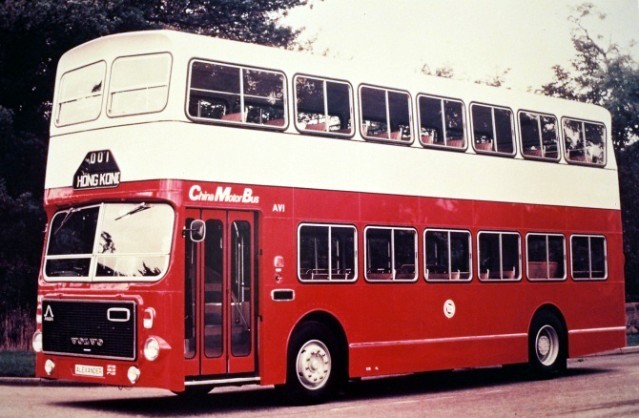
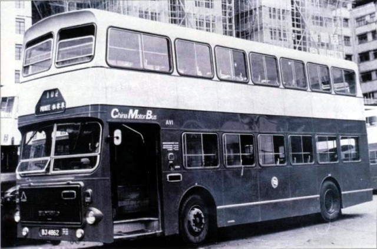
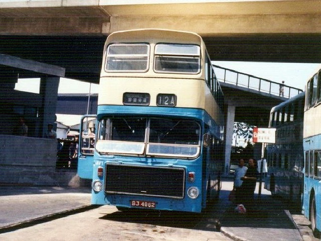
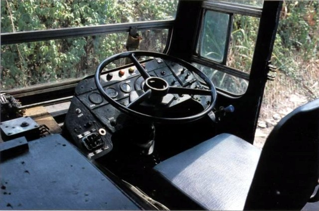
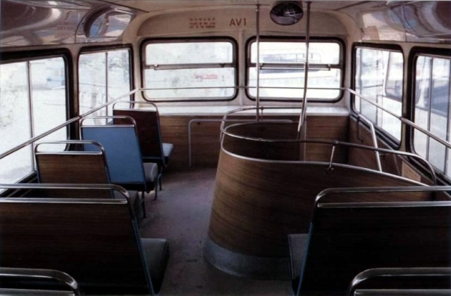
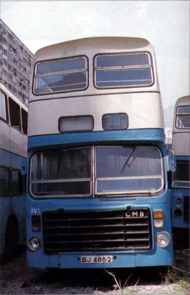

|
AV車系--Volvo-Ailsa B55-10 |
|
||
 新車全車在英國裝嵌完成，與「MS」一起於1975年10月以水路運抵香港，隨即在港登記，車牌為BJ4862，於11月4日正式投入服務。中巴為新車編制為「AV」，即Ailsa-Volvo之意，編號為AV1。 在投入服務之前，中巴把AV1在港島區不同地區、路段試行了數星期，以測試新車在香港的適應能力，路段更包括港島東區的大潭、石澳。試車的效果，讓中巴非常滿意，也吸引不少市民的目光。 AV1於1975年11月，與「MS」一起率先投入隧道路線102服務，但由於單門設計，對應付客量驚人的隧道路線並不適合，因此AV1不久便從102線退下，改為行走10A線。 不得不提AV1的樓梯設計，非常獨特，就是與一般雙層巴士的方向是相反的。乘客在登上上層時，必須先經過上層車頭，才能轉身往車內走去。這個設計，在後來的雙層巴士上完全沒有出現。 由於AV1馬力驚人，加上先進的全自動波箱，深受車長喜愛，中巴司機更把AV1稱為「單門跑車」。踏入80年代，AV1有一段時間成為半山區路線12A的字軌車 。後來由於單門設計，導致AV1在繁忙時間時難以發揮疏導的功能，加上AV1的車門常常出現「脫軌」的情況，但一直無法解決，因此長期成為車隊中的後備車輛。直至1991年1月，AV1才結束在中巴16年的服務生涯，宣告退役。
 (圖二)簇新的AV1，帶有濃烈的蘇格蘭味道，如上層車頭向下推的擋風玻璃、三角型設計的路線牌箱、富線條的車身。這個車身，後來為Alexander帶來了香港地區逾千張訂單，除了成為中巴的標準車身外，也讓Alexander建立了香港這個海外市場。
 (圖三)圖片攝於1984年，AV1在一次交通意外後，車頭改為中巴的標準樣式，停泊在中環總站的12A月台。
 (圖四)AV1的引擎室，司機座位低矮，左下方可見SCG波箱的「算盤子」
 (圖五)AV1的上層車箱，可見樓梯的方向設計獨特，乘客是從後向前的方向通往上層。全車桃木紋的防火膠版，也是AV1的一大特色。
 (圖六)AV1最後於1991年1月退役，停泊在柴灣車場，等候肢解。 圖片來源﹕ 圖一、四、五、六﹕車主雜誌 圖二﹕Hong Kong Buses V.1-- Mike Davis 圖三﹕Tims提供 |